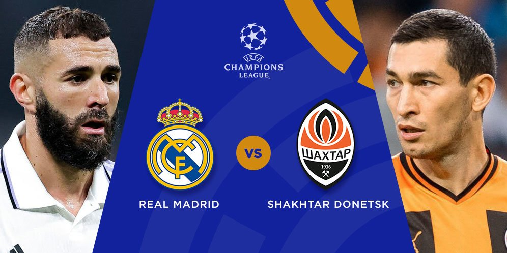

Real Madrid vs Shakhtar Donetsk: Tentukan Tiket Ke Fase Gugur

Real Madrid butuh satu kemenangan untuk lolos ke fase grup Liga Champions. Menjamu Shakhtar Donetsk, Kamis (6/10/2022) dini hari, wajib dikonversi tiga poin.
Madrid saat ini bertengger di singgasana Grup F. Karim Benzema dan kawan-kawan meraup 6 poin dari dua laga. Unggul dua angka dari Shakhtar Donetsk yang mengintip di tangga kedua.
Tapi, rekor pertemuan Madrid kurang bagus melawan tim Eropa Timur. Pada 2020 Madrid dua kali ditelan Shakhtar. Tapi, Madrid membalasnya musim lalu dengan kemenangan 5-0 dan 2-1.
Namun persiapan Real Madrid sedikit terganggu. Sembilan kemenangan beruntun yang dicatat Si Putih di awal musim 2022-2023 harus berakhir pada Minggu (2/10/2022), ketika ditahan 1-1 oleh Osasuna pada pekan ketujuh LaLiga Spanyol. Madrid pun turun ke urutan dua tabel, kalah selisih gol dari Barcelona.
Menghadapi Shakhtar, Madrid dijagokan untuk menang. Namun mereka kalah di laga kandang dan tandang lawan tim besutan Igor Jovicevic pada babak grup musim 2020-2021. Tim Ukraina itu secara mengejutkan mengukir kemenangan 3-2 di Bernabeu pada matchday pertama.
Tapi tepat di musim lalu, ketika keduanya kembali berada di grup yang sama di Liga Champions, Shakhtar kalah dua kali dari lawan yang sama, termasuk skor 2-1 di Bernabeu. Melihat situasi Ukraina setahun terakhir, hasil yang diraih Shakhtar Donetsk sejauh ini cukup mengejutkan. Mereka mencatat kemenangan 4-1 di laga tandang melawan RB Leipzig, lalu bermain imbang 1-1 dengan Celtic pada matchday kedua.
Head to head
6 kali bertemu
4 kali Real Madrid menang
2 kali Shakhtar Donetsk menang